Formação acadêmica sólida
Especialistas com trajetória em mestrado, doutorado e docência na FOA-UNESP.
Clínica odontológica em Votuporanga-SP
Endodontia, implantes, prótese dentária e cuidados integrados com planejamento individualizado em Votuporanga-SP.
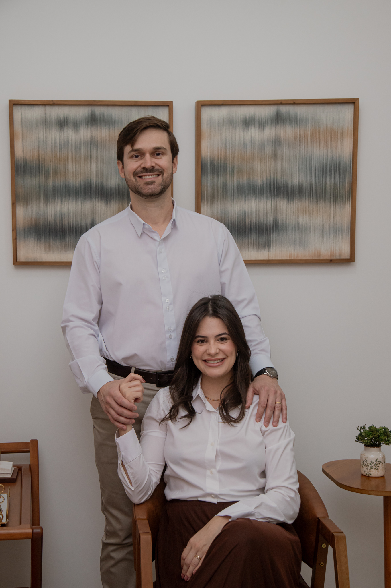
Diferenciais
Especialistas com trajetória em mestrado, doutorado e docência na FOA-UNESP.
Cada plano nasce da escuta, do diagnóstico e das necessidades reais de cada paciente.
Condutas clínicas orientadas por ciência, previsibilidade e acompanhamento responsável.
Recursos modernos apoiam diagnósticos mais detalhados e tratamentos mais seguros.
Uma experiência acolhedora, clara e tranquila em todas as etapas do tratamento.
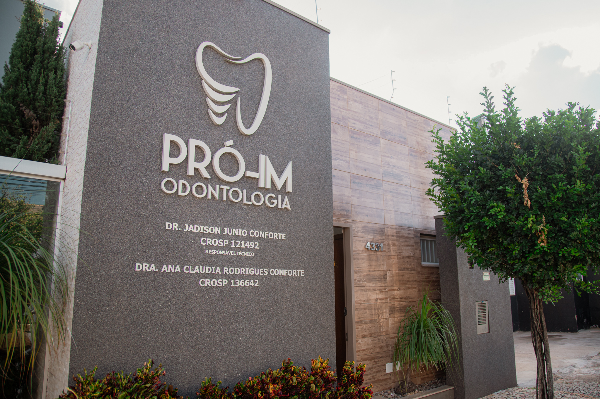
Nosso propósito
Unimos conhecimento, experiência e tecnologia para devolver função e estética ao sorriso, por meio de um atendimento individualizado, humanizado e focado nas necessidades de cada paciente.
Na Pró-im Odontologia, o tratamento é conduzido com clareza, precisão e respeito ao tempo de cada pessoa, buscando resultados que façam sentido para a saúde, a rotina e a confiança do paciente.
Especialidades
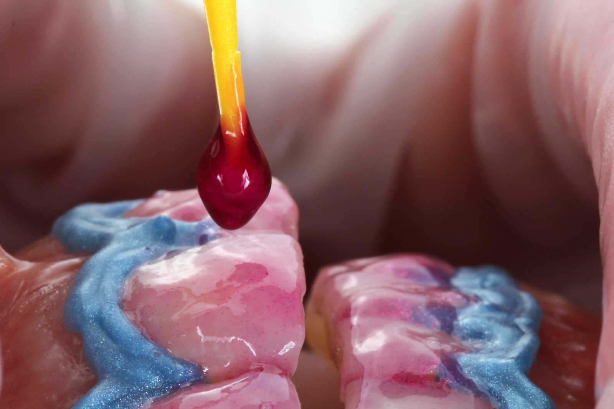
Restaurações estéticas e cuidados para recuperar forma, cor e harmonia dos dentes.
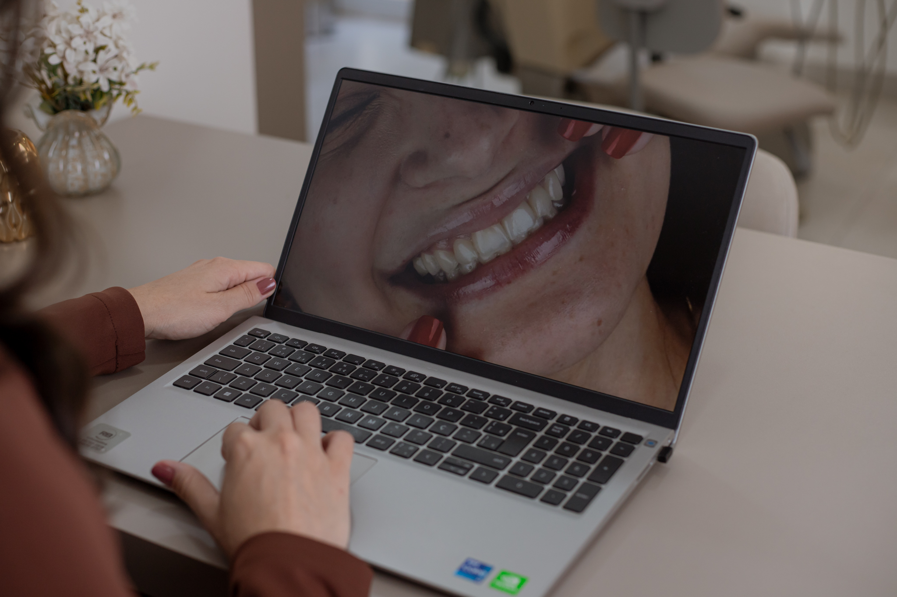
Tratamento das gengivas e estruturas de suporte para preservar saúde e estabilidade bucal.
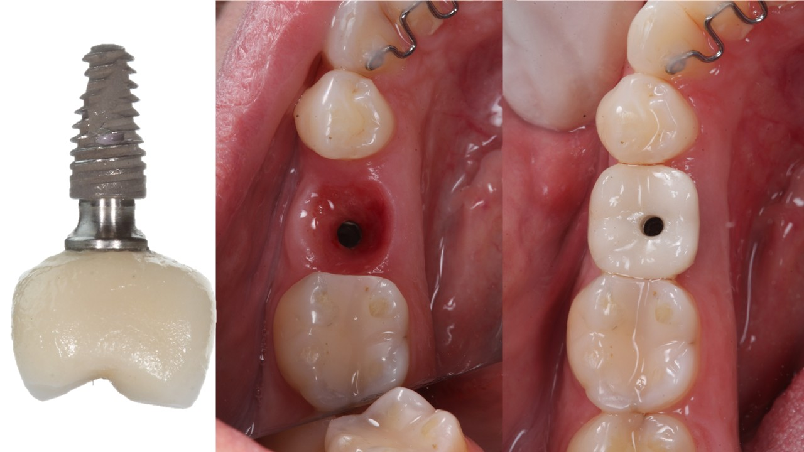
Reposição de dentes perdidos com planejamento cuidadoso, foco em função e naturalidade.
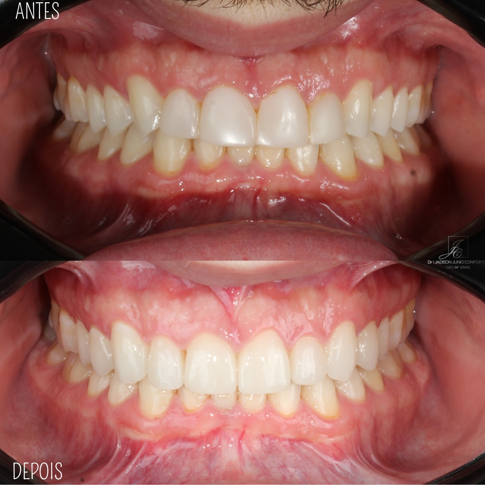
Reabilitações para devolver mastigação, conforto e estética ao sorriso.
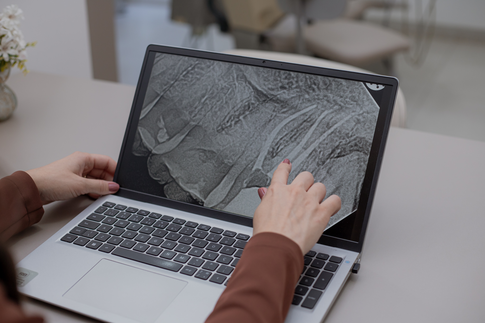
Tratamento de canal com precisão, controle de dor e preservação da estrutura dental.
Equipe
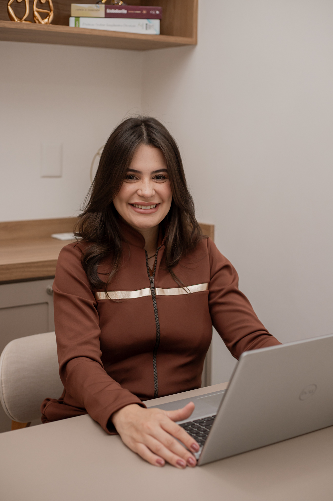
Cirurgiã-dentista formada pela FOA-UNESP, especialista, mestre e doutora em Endodontia pela FOA-UNESP.
Professora em cursos de graduação, atualização e especialização em Endodontia. Atua com prática clínica baseada em evidências, precisão técnica e cuidado humanizado.
CROSP: 136.642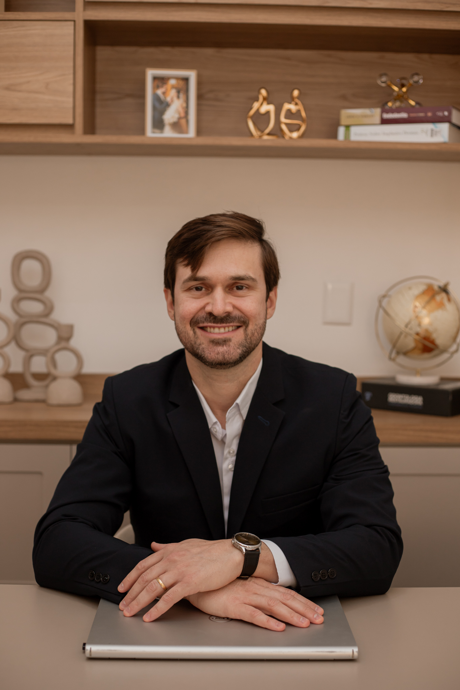
Cirurgião-dentista formado pela FOA-UNESP, mestre em Prótese Dentária e doutor em Implantodontia pela FOA-UNESP.
Professor de graduação e cursos de atualização em Prótese sobre Implante, com ampla experiência em implantes, prótese sobre implante e reconstrução tecidual.
CROSP: 121.492Experiência integrada
A clínica integra Endodontia, Implantodontia, Prótese Dentária e cuidado periodontal para planejar o tratamento de forma ampla, considerando saúde, função mastigatória, estética e longevidade dos resultados.
Estrutura
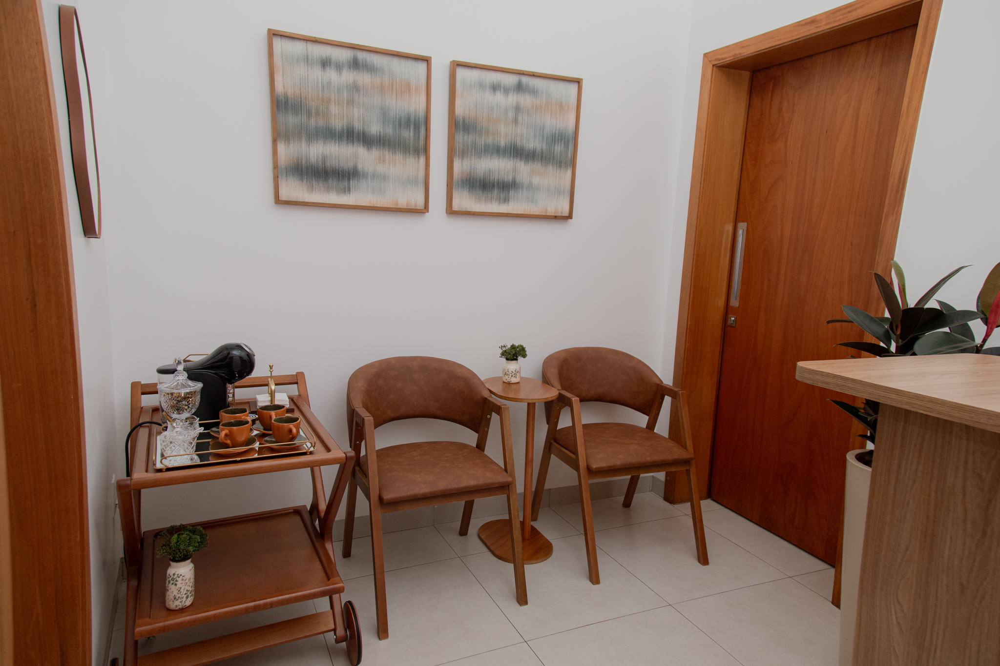
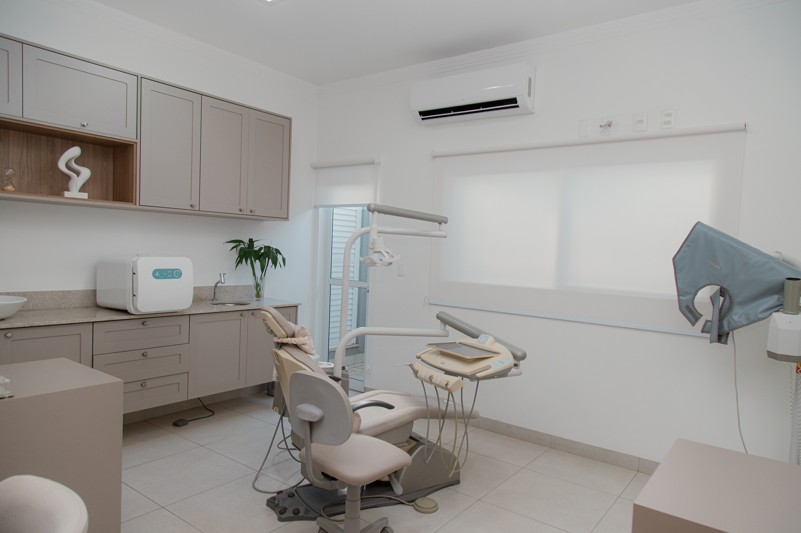
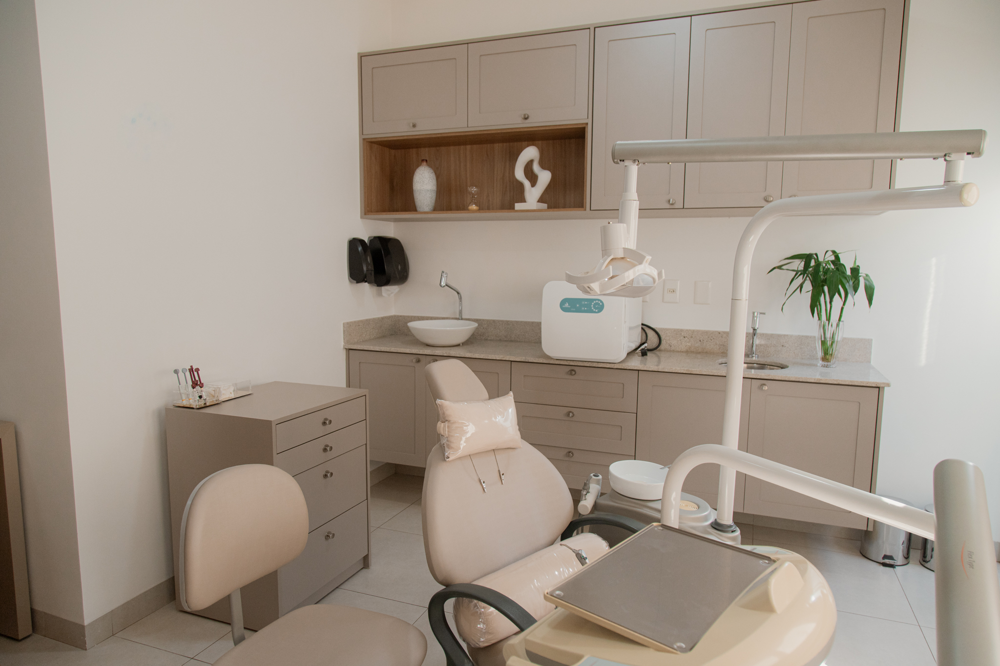
Localização
Agende sua avaliação pelo WhatsApp ou deixe seus dados para retorno da equipe.
(17) 99774-1808Agende uma avaliação e conheça um planejamento odontológico feito para as suas necessidades.